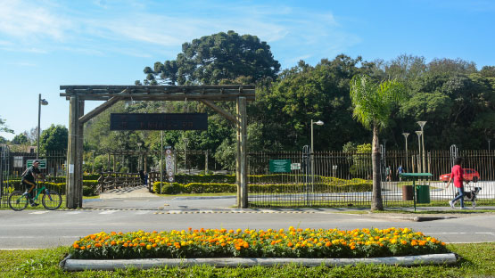
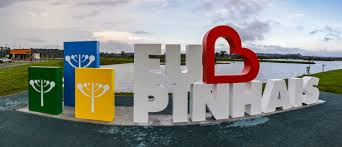
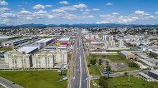
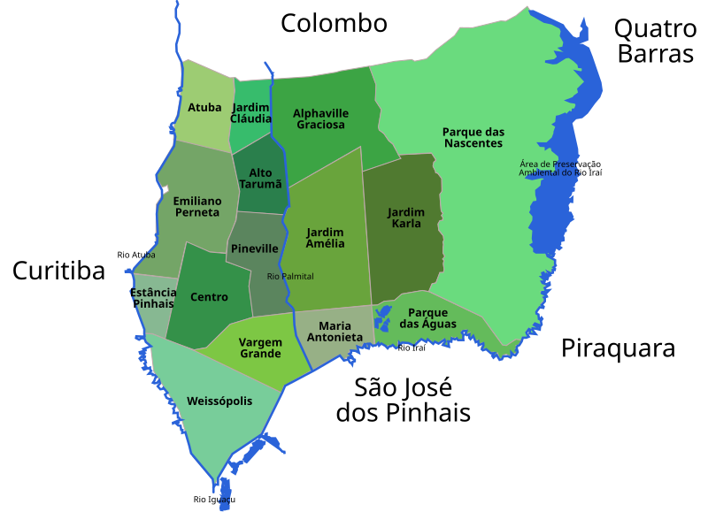
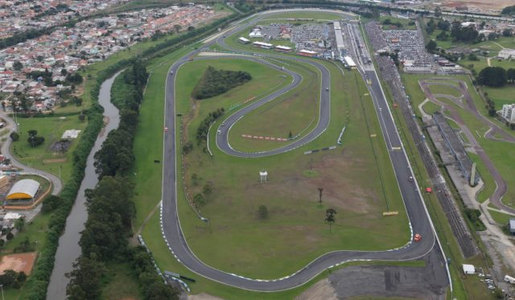
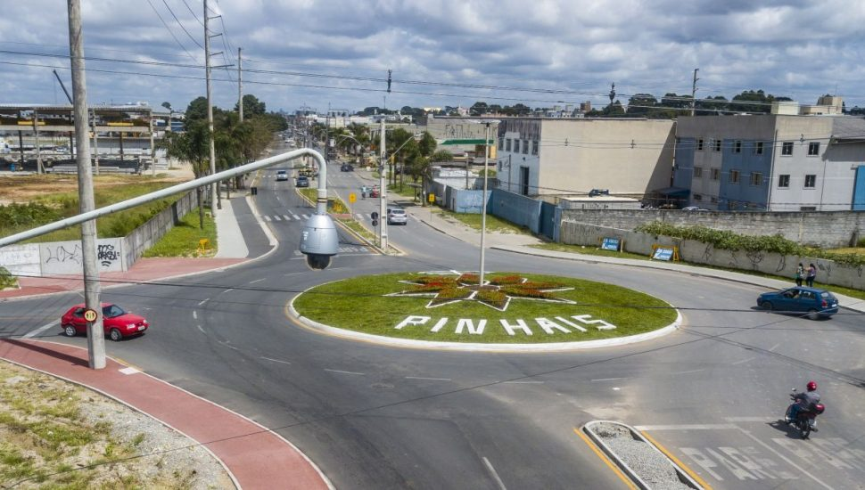

Galeria de Fotos
Bandeira de Pinhais, PR
fonte: http://www.educadores.diaadia.pr.gov.br/modules/galeria/detalhe.php?foto=129&evento=2

Bosque Municipal de Pinhais.
fonte: https://www.viajeparana.com/Pinhais

Letreiro "Eu amo Pinhais".
Fonte: https://ifpr.edu.br/pinhais/parabens-pinhais/

Parque das águas.
Fonte: https://ifpr.edu.br/pinhais/parabens-pinhais/

Avenida
Fonte: https://grupoparanacomunicacao.com.br/pinhais-e-a-cidade-mais-sustentavel-da-regiao-metropolitana-de-curitiba/

Mapa de Pinhais
Fonte:https://commons.wikimedia.org/wiki/File:Mapa_político_e_hidrográfico_de_Pinhais.svg

Autódromo de Pinhais
Fonte:https://maispinhais.com.br/a-historia-do-autodromo-internacional-em-pinhais/

Fonte: https://www.tribunapr.com.br/noticias/curitiba-regiao/olhos-eletronicos-ajudam-cidade-da-regiao-metropolitana-de-curitiba-a-solucionar-crimes/
